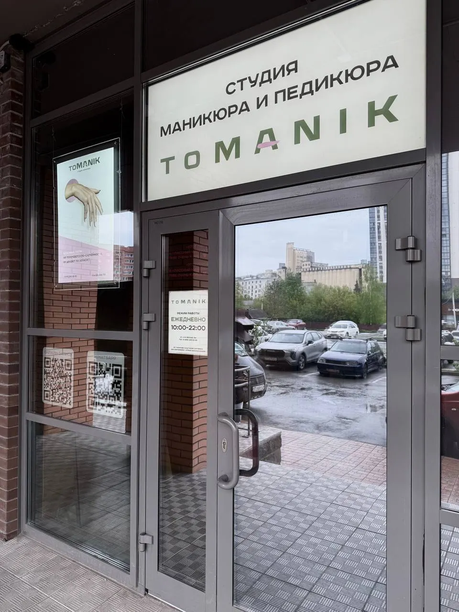
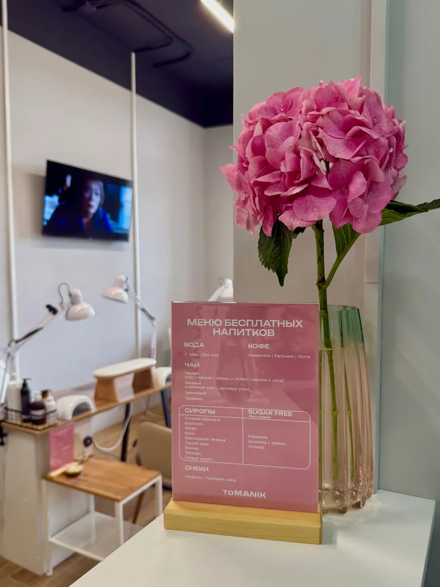
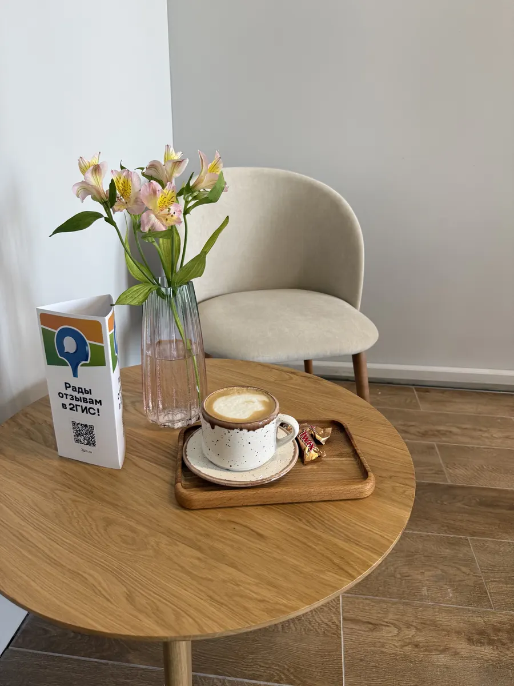
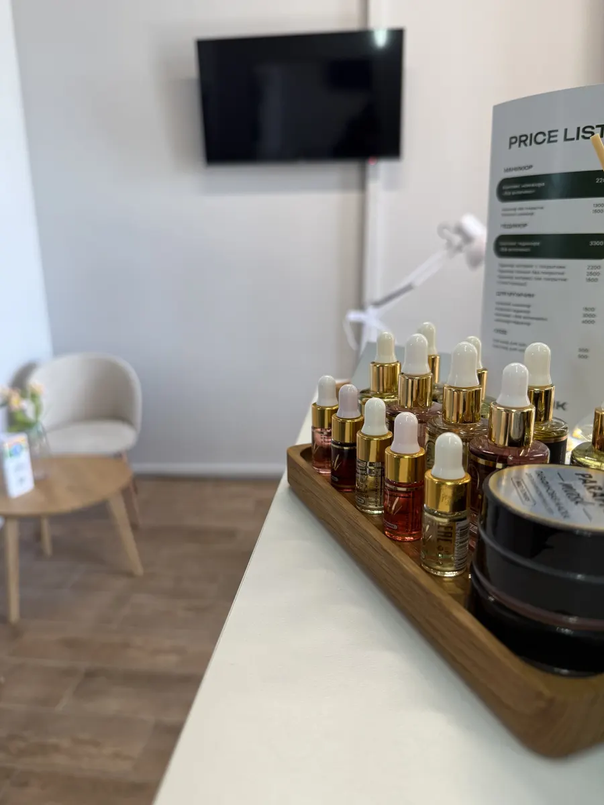

Студия маникюра и педикюра · Новосибирск
Маникюр и педикюр в Новосибирске: студия Tomanik
Клиенты пишут про аккуратную работу мастеров, приятный бонус - крем и массаж кистей, и уютную студию с напитками на входе.
- Рейтинг 5,0 на Яндекс.Картах, 64 отзыва
- Маникюр, педикюр, мужской сервис, брови
- Бесплатные напитки в студии

Услуги и цены
Прайс с карточки на Яндекс.Картах. Актуальную цену уточняйте при записи.
Услуги
- Маникюр без покрытия1300 ₽
- Японский маникюр P.Shine1700 ₽
- Комплекс маникюра «Всё включено»2500 ₽
- Педикюр экспресс с покрытием2200 ₽
- Педикюр полный без покрытия2500 ₽
- Комплекс педикюра «Всё включено»3300 ₽
- Мужской маникюр1500 ₽
- Снятие гель-лака400 ₽
Цены с карточки, список давно не обновлялся. Уточняйте у мастера.
Как проходит
- 01
Записались на удобное время
В WhatsApp, Telegram или по телефону +7 (995) 245-00-95.
- 02
Пришли в студию
2-я Обская ул., 154. Вход с вывеской «Студия маникюра и педикюра Tomanik».
- 03
Мастер сделал маникюр или педикюр
Клиенты пишут про бонус: крем и массаж кистей.



Что пишут клиентки
Аккуратно
Из отзыва: «Валерия мастер все делала аккуратно».
Быстро и безболезненно
Из отзыва: «Всё быстро, аккуратно и безболезненно!».
Приятный бонус
Из отзыва: «Приятный бонус крем и массаж кистей».
Услышат ваши желания
Из отзыва: «ты точно будешь услышанным в своих желаниях».
Отзывы с Яндекс.Карт
«Все понравилось. Валерия мастер все делала аккуратно. По времени затрачено меньше чем планировалось. Приятный бонус крем и массаж кистей. Как будет возможность, обязательно вернусь.»
Николай Бледных · 17 июля
«Была у мастера Анастасии на педикюре! Мне понравилось! Всё быстро, аккуратно и безболезненно!Очень приятная, вежливая и аккуратная, мастер! В целом салон красивый, удобный, стильный и в тоже время уютный! Спасибо большое, Анастасия, буду рада приходить к Вам сново!!!😊»
Анастасия Мещерякова · 27 июня
«Отличная студия , на входе вас встречает очень добродушная девушка администратор и предлагает напитки , так же работают телевизоры и можно посмотреть сериал , мастера профессионалы своего дела и ты точно будешь услышанным в своих желаниях , восторг , спасибо за вашу работу ❤️»
Дарина Медведева · 5 августа
Отзывы с карточки на Яндекс.Картах, без правок.
Частые вопросы
Когда вы работаете?
На вывеске у входа указано: ежедневно 10:00–22:00.
Как записаться?
Выберите услугу, день и время выше: откроется чат с готовым сообщением, останется нажать «Отправить». Можно позвонить: +7 (995) 245-00-95.
Можно ли подождать за напитком?
Клиенты пишут, что на входе предлагают напитки.
Есть ли мужской маникюр?
Да, в прайсе на карточке есть мужской маникюр и педикюр.
Где вы находитесь?
Новосибирск, 2-я Обская ул., 154.
Запишитесь к своему времени
- Адрес
- 2-я Обская ул., 154, Новосибирск
- Часы
- Ежедневно 10:00–22:00
- Телефон
- +7 (995) 245-00-95